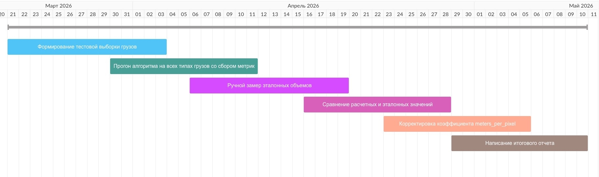

Диаграмма Ганта: март – май 2026

Хронология работы: февраль – май 2026
Подготовлен набор изображений различных типов грузов для тестирования алгоритма. Выполнена разметка данных, определены эталонные значения объёмов для последующего сравнения.
Алгоритм расчёта объёма протестирован на всём наборе изображений. Собраны метрики точности, скорости и стабильности детекции для каждого типа груза.
Параллельно с прогоном алгоритма выполнены ручные замеры объёмов для формирования эталонной базы. Результаты зафиксированы и подготовлены к сравнению с расчётными данными.
Проведён анализ отклонений между значениями, полученными алгоритмом, и данными ручных замеров. Определены основные источники погрешностей.
На основе анализа расхождений уточнён переводной коэффициент из пикселей в метры. Точность расчёта объёма повышена до целевого уровня >95%.
Подготовлен финальный отчёт по проекту. Собраны все результаты тестирования, метрики точности, экономические расчёты. Материалы оформлены и переданы заказчику.